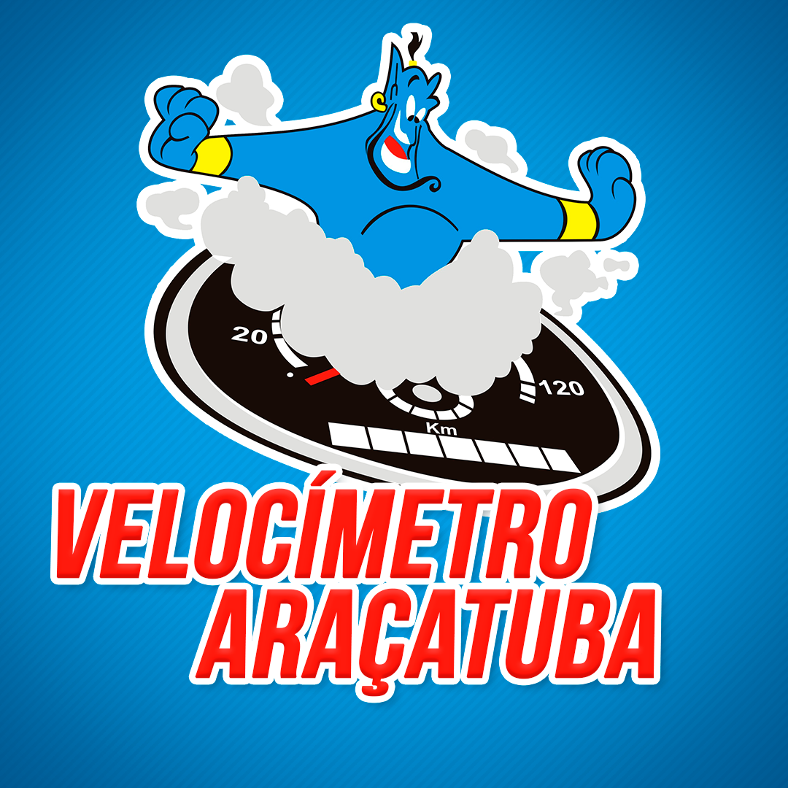

Velocímetro
Fazer um remap em um carro ou caminhão é o processo de reprogramar a unidade de controle eletrônico (ECU) do veículo, que é como o "cérebro" do motor. A ECU controla vários parâmetros do motor, como a mistura de combustível, o tempo de ignição, a pressão do turbo, entre outros. O remap ajusta essas configurações para melhorar o desempenho do veículo de acordo com as necessidades ou preferências do proprietário.
Trabalhamos com os melhores Equipamentos do Mercado entre eles, KESS 3, KTAG , ECM TITANIUM, RACE, WINOLS, SWIFTECH, AUTOVEI, entre outros.
1. Aumento de Potência: Uma das principais razões para fazer um remap é aumentar a potência do motor. Ao otimizar os parâmetros de desempenho, o veículo pode ganhar mais cavalos de potência e torque, resultando em acelerações mais rápidas e uma resposta mais ágil.
2. Prolongamento no Tempo de Troca de Marcha: O remap também pode influenciar no prolongamento do tempo de troca de marcha, especialmente em veículos automáticos ou semiautomáticos. Isso significa que o motor poderá continuar acelerando por um período maior antes que a ECU mande a transmissão trocar de marcha.
3. Melhor Resposta em Ultrapassagens: Em situações de ultrapassagem, ter uma resposta mais rápida e poderosa do seu veiculo pode te tirar de situações complicadas.
4. Melhoria na Economia de Combustível: Dependendo do tipo de remap, é possível otimizar a eficiência do motor, o que pode resultar em uma economia de combustível. Isso é especialmente útil para veículos que percorrem longas distâncias regularmente.
5. Personalização do Desempenho: O remap permite ajustar o veículo de acordo com as necessidades específicas do proprietário. Por exemplo, para quem utiliza o carro em competições, é possível priorizar a potência máxima. Para veículos de trabalho, como caminhões, o remap pode focar em melhorar o torque em baixas rotações, facilitando o transporte de cargas pesadas.
6. Ajustes para Modificações: Se o veículo passou por modificações, como a adição de um turbo, troca de escapamento ou filtros de ar, o remap pode ajustar a ECU para tirar o máximo proveito dessas melhorias.
7. Remoção de Limitações de Fábrica: Muitas vezes, os fabricantes impõem limitações de desempenho no motor por questões de regulamentação ou para diferenciar modelos. O remap pode remover essas limitações, permitindo que o veículo atinja todo o seu potencial.
8. Condução Mais Suave: Em alguns casos, o remap pode melhorar a suavidade na entrega de potência, resultando em uma condução mais agradável e menos "trancos" ao acelerar.